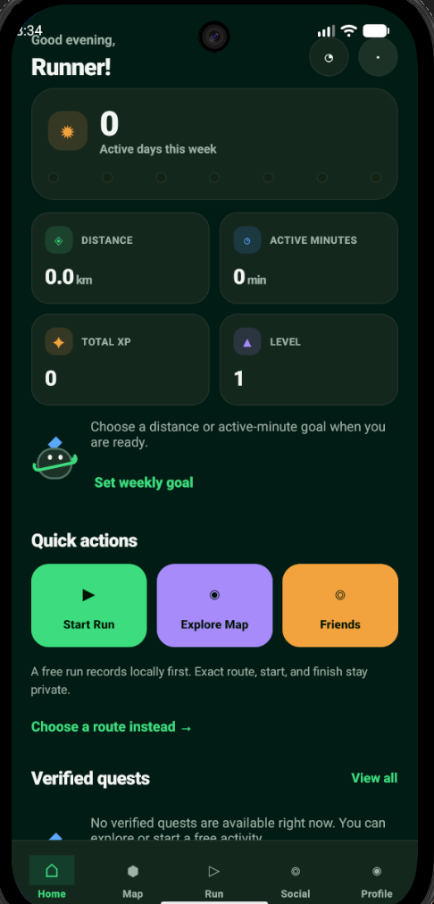
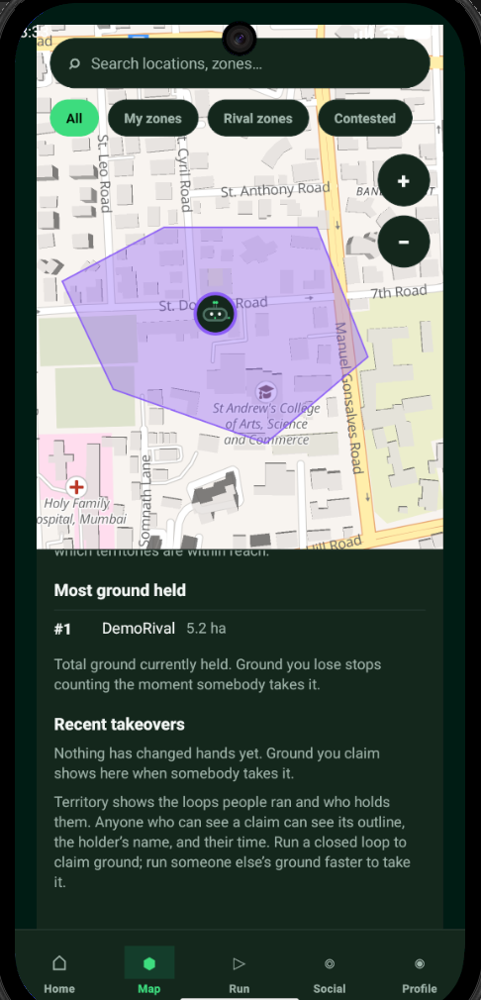
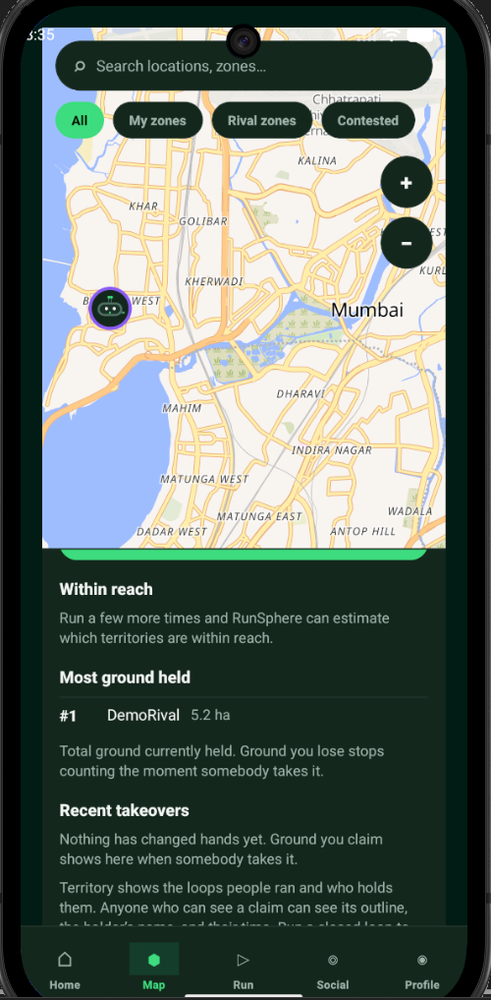

An outdoor running app that gamifies movement through adaptive quests and H3 territory-claim seasons, entirely pace-neutral. Built as a pnpm/Turbo monorepo.



Philosophy
RunSphere completely reimagines outdoor movement gamification by removing pace as a performance signal. The core philosophy: outdoor movement should feel exploratory, not competitive in a harmful way.
Instead of measuring who runs fastest, the app uses H3 hexagonal cell grids for territory-claim seasons, scoring runners based on their best contiguous 60 minutes per day. This ensures a level playing field, with newcomer divisions and winner concentration guardrails limiting top players' dominance.
Key Features
Architecture
The project is orchestrated using Turbo 2 and pnpm across several packages. The mobile client leverages Expo (React Native) and MapLibre (OpenGL native variant on Android) for fluid, highly responsive map rendering.
The backend is powered by a blazing fast Fastify 5 API server running on Node 22, backed by PostgreSQL 18 + PostGIS managed locally via Docker Compose. Data contracts are strictly typed using TypeBox across the monorepo.
Under the Hood
expo-sqlite with SQLCipher for local database caching.@runsphere/db package handling PostGIS interactions.Security
Targeting adults (18+) in the Mumbai Metropolitan Region, privacy is an architectural guarantee. The server actively enforces a 200 m privacy blur on all saved routes.
Safety contacts use delayed and coarse location sharing with auto-expiry. Raw coordinates are never exposed in analytics or logs—only derived counters are kept. Nominatim geocoding is strictly proxied server-side to prevent exposing client IPs.
Privacy Measures
Tech Stack